On the dashboard's bars, map dots and charts, three of the four sterilisation marks are blues that sit close together. Sterilised, Probably and Not known are hard to tell apart at a glance, and in a black-and-white print they merge. Only Not sterilised (rust) stands out.
This spec changes how two of the marks are drawn so all four can be told apart by shape and pattern as well as colour. The words, the icons and their order stay the same.
Approve the change below (option A), or pick option B or C. Once you approve, I build it as one small PR, with the same screenshots retaken from the real code.
A colony bar, before and after:
"Not known" is the absence of a fact, so it shouldn't look like a shade of "sterilised". Grey reads as "no information yet", next to the blues (yes, probably) and rust (no). The icon beside the word stays a ring and is drawn in a darker grey, so it is still easy to read on a white card.
Screenshots from a local copy of the dashboard with made-up Syros colonies (no real data, nothing sent anywhere). The "after" pictures use the proposed colours drawn by the real page code, changed temporarily in a scratch copy.
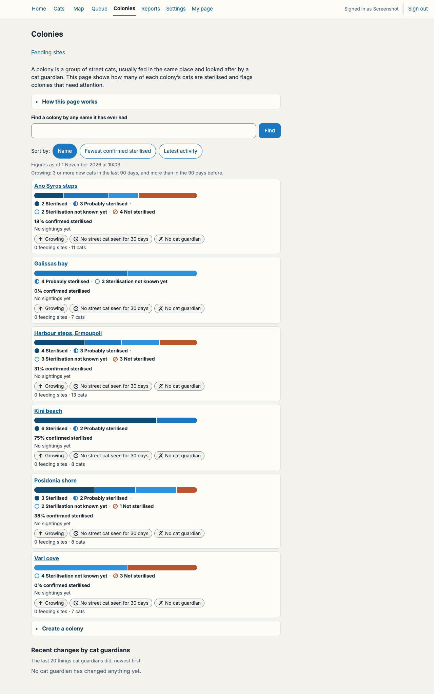
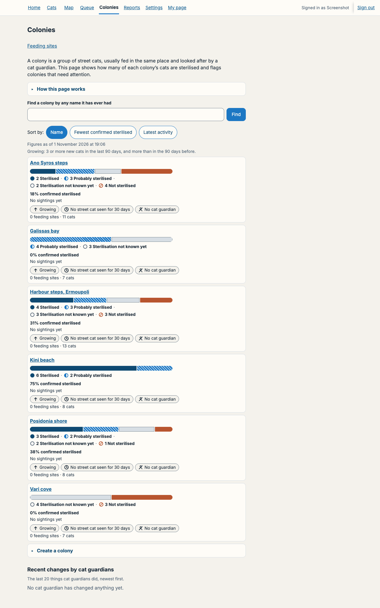
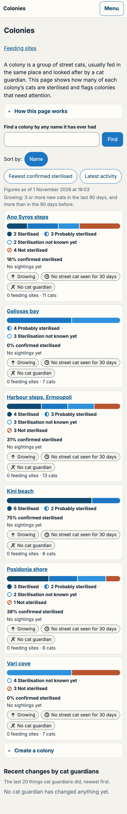
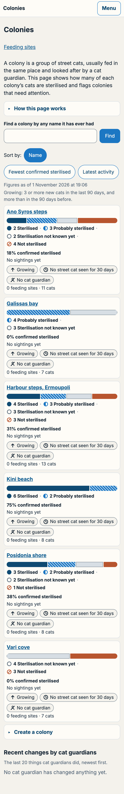
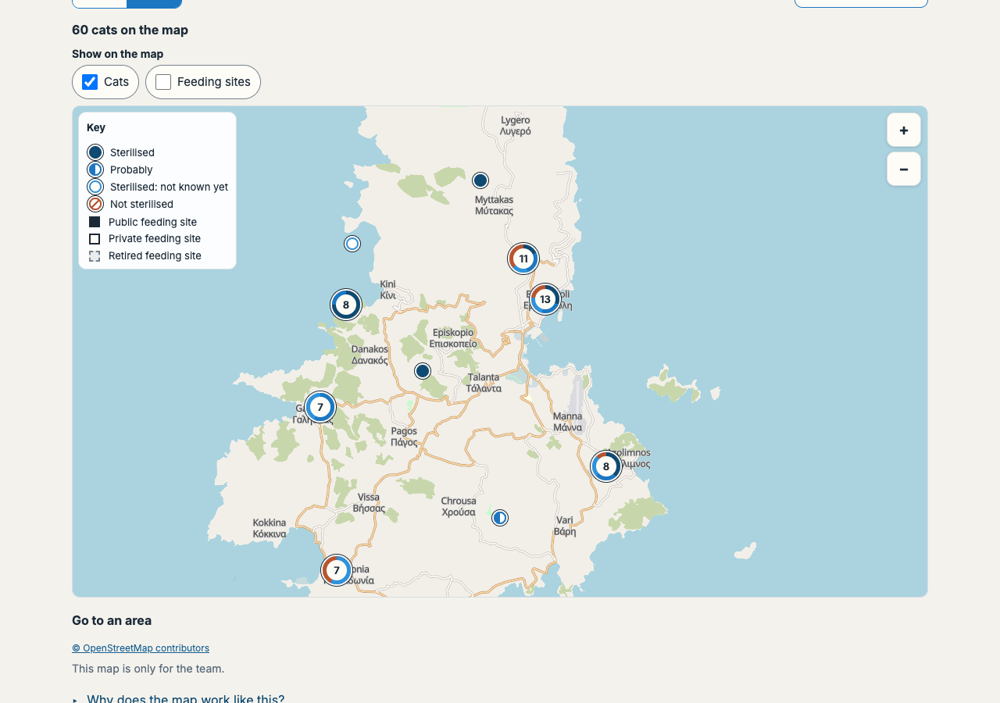
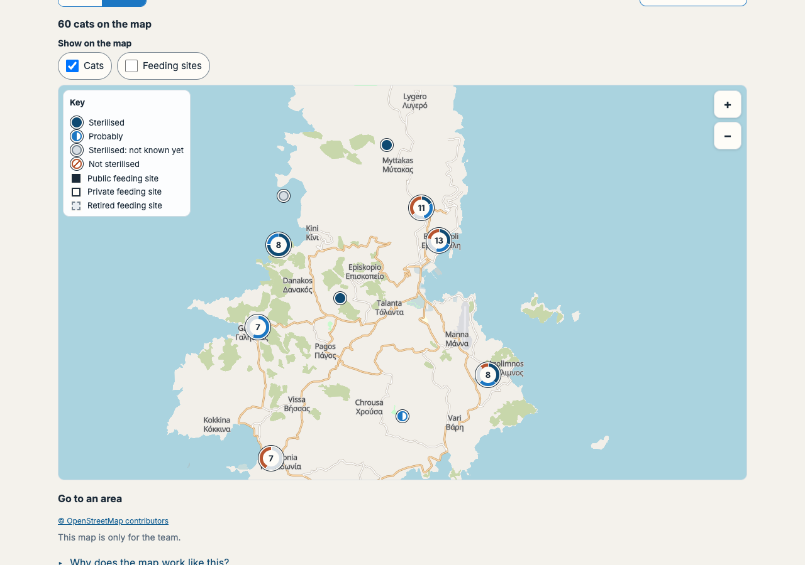
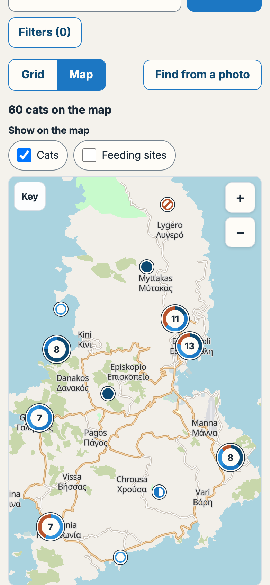
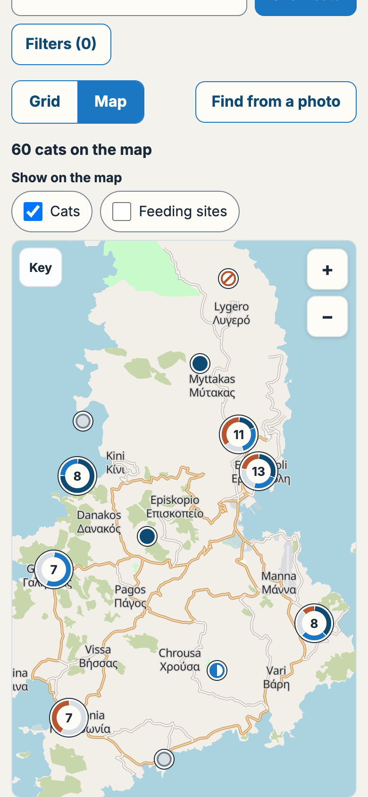
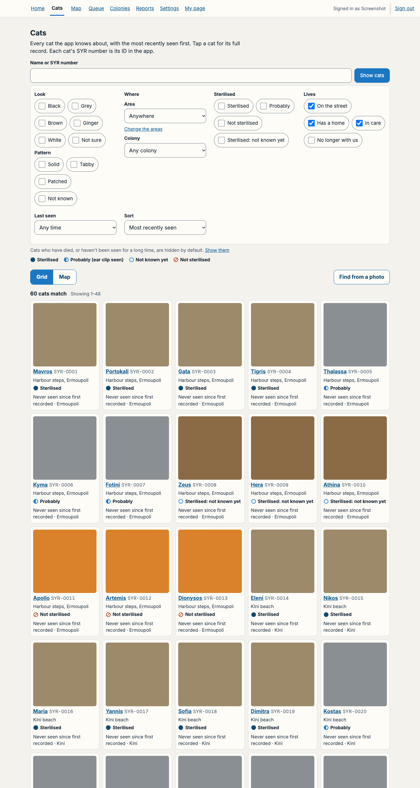
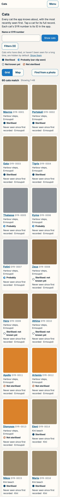
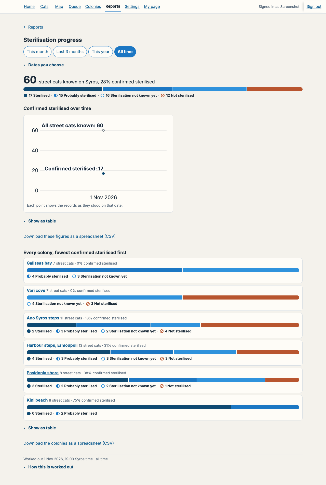
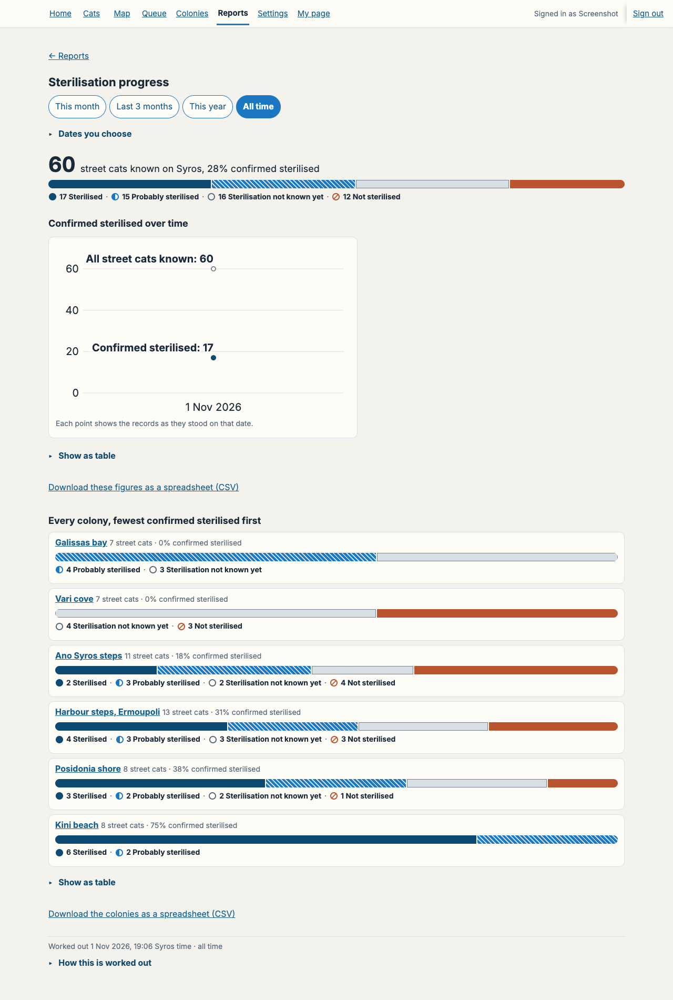
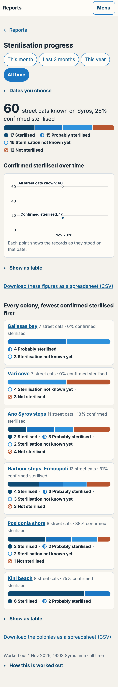
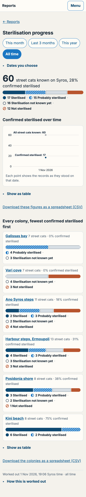
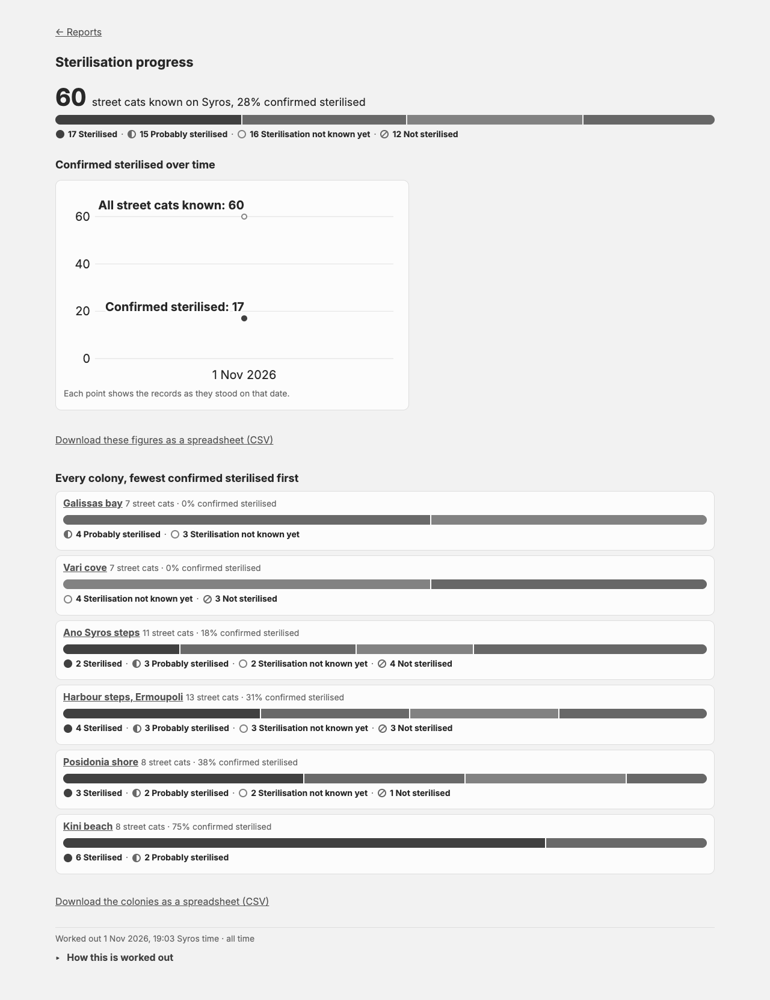
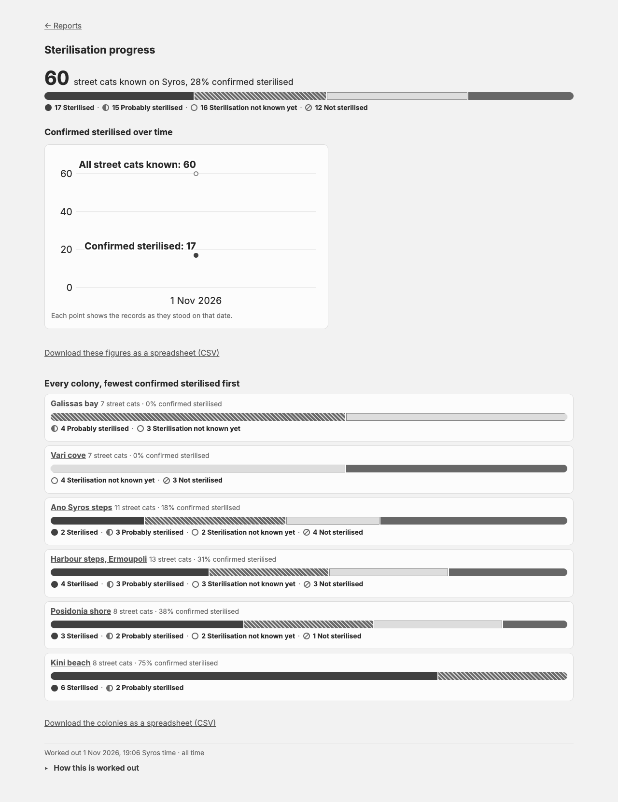
The ticket asked for every pair of neighbouring parts, and every part against the white card, to differ by at least 3 to 1 (the accessibility guideline for shapes). Colour alone can't meet that for all four marks at once. Any blue light enough to stand apart from the dark blue is too light against white, and a light grey is too pale against white. So the design uses the other two tools the guideline allows: a pattern (the stripes) and an edge (the white gaps already between parts, and the outline on grey).
| Pair | Now | Proposed | What separates them |
|---|---|---|---|
| Sterilised next to Probably | 2.0 : 1 | 2.0 : 1 | Stripes on Probably, and the white gap |
| Probably next to Not known | 1.4 : 1 | 3.5 : 1 | Colour |
| Not known next to Not sterilised | 1.4 : 1 | 3.5 : 1 | Colour |
| Not known against the white card | 3.4 : 1 | 1.4 : 1 | Its outline, 3.9 : 1 |
| The Not known icon against white | 3.4 : 1 | 5.5 : 1 | Colour |
| Probably's stripes against its blue | none | 4.7 : 1 | Colour |
Every part also keeps its word and its icon (filled, half, ring, slashed) beside it, so nothing relies on colour.
As shown above.
Good: all four look different at a glance, in colour and in print. "Not known" reads as "no information", which is what it means. Small change: two colours, one pattern, one outline.
Risk: the team has learned "light blue = not known" over the past weeks; this changes it. The legend under every bar shows the new look, so it relearns quickly.
Leave "Not known" blue; stripe "Probably".
Good: the smallest change.
Risk: "Probably" and "Not known" still look alike in print and at small sizes (map dots, rings), which is the main complaint.
For example blue, teal, grey, rust.
Good: strongest colour difference.
Risk: loses the idea that the blues are "the sterilised family". It adds a colour that isn't in the app's Aegean palette, and it still prints poorly without a pattern.